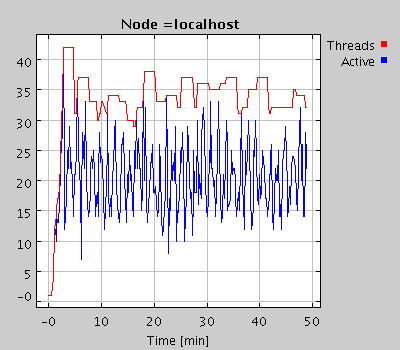
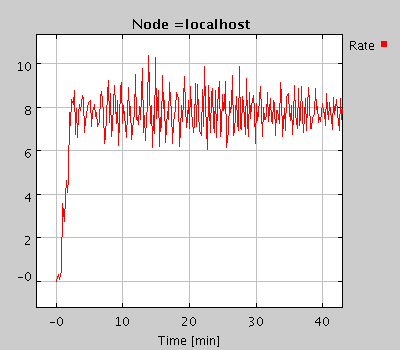
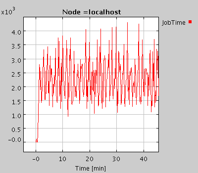
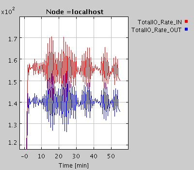
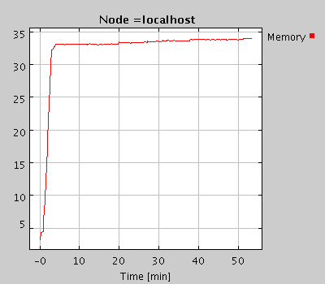
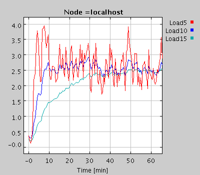
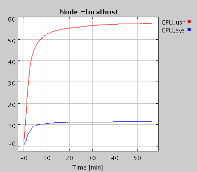

|
MonALISA Performance Test
Perform a large SNMP query (~200 metrics values) on a 500 nodes farm every 60s.
MonALISA version : 0.2 , java virtual machine 1.4 beta SUN
The monitoring service run on Dell 8100 ( Pentium ||| @ 1 GHz ) laptop connected to LAN at 10Mbps
running linux (RH 7.2)The same system runs the embedded (InstantDB) data base to store the collected values
Date: 26 August 02 / CERN
We monitored the lxbatch farm at CERN (500 nodes) performing an snmpwalk on the enterprise tree
(.1.3.6.1.4.1.2021 ~200 metrics vales) for each node every 60s.

The total number of threads (created - red and active - blue) to perform these measurements.
A mean of ~20 active threads were used to perform ~8 snmpwalk requests per second. Each snmp request was for ~200 values.

The rate for performing monitoring tasks (in this case snmp requests).
A rate of ~8 tasks per second corresponds to ~1600 metrics values collected per second.

The mean time to perform a task (units in ms).
The mean time for performing such an snmp request was ~ 2.5s.

The total no. of tasks performed in time.

The IO traffic on the system running the MonALISA service.
The in and out traffic is measured in Kb/s.

The memory (MB) used by the MonALISA service.

The Load on the system running MonALISA service.
The way load is evaluated in linux for multi-thread applications is not perfectly correct.

The CPU usage.
|